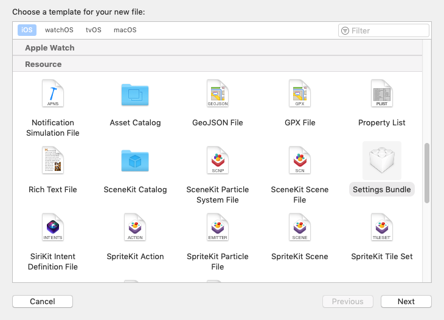
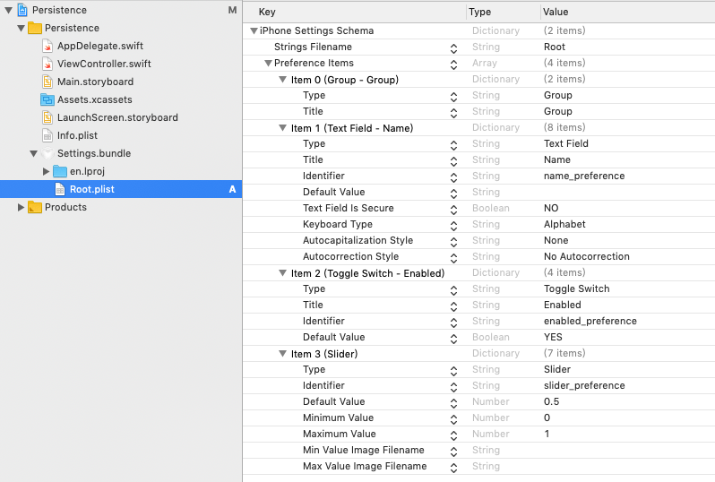
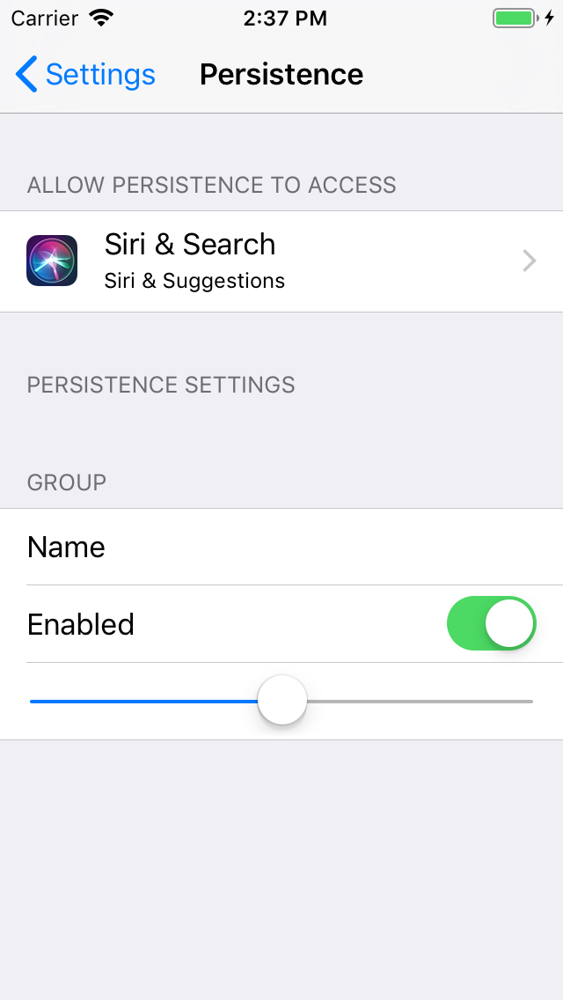

0x01、UserDefaults
特点
UserDefaults是一个单利类- 并且是
线程安全的 - 数据存储在.plist文件中
- 一般保存首选项、少量缓存数据
- 不能将自定义的对象保存起来
使用
1 | //取得单利对象 |
0x02、Settings Bundle
新建Bundle
新建文件 选择 Settings Bundle 类型

自动生成的plist中包含了一些默认设置

在手机的设置中就会生成对应的设置项

按需求修改
经过一番修改 变成了这个样子

设置界面也变了样子

读取设置
1 | class ReadSettingsBundle { |
0x03、keychain
特点
保存的数据不会随着应用卸载而被删除、一般保存密码、登陆Token、UDID等标识。
使用
首先在Capabilities中打开Keychain

接下来就是一顿骚操作
使用起来也是很麻烦 通常使用第三方库
Swift第三方库 KeychainAccess、OC第三方库 SAMKeychain
0x04、Plist
特点
可以直接将集合中的数据保存到plist文件中，同样不支持自定义对象。
使用
1 | //保存数据 |
Plist文件长这个样子

1 | //读取Plist文件 |
0x05、归档
特点：
- 数据存储archive文件中
- 可以将自定义的类型归档
使用
1 | //自定义一个类 |
1 | //NSKeyedArchiver |
0x06、文件
可以任意保存数据到硬盘上，并且可以移动、拷贝、删除等操作。
看API名字都很好理解 用一个创建文件的API演示一下
1 | //将安装包中图片保存到沙盒路径 |
0x07、sqlite3
特点
- 使用C语言编写、因此使用不太方便
- 数据存储在.db3数据库中
- 可以存储大量数据，并且存储、检索比较高效
使用
1 | //简单创建一个数据库 用事物插入100条数据 |
执行结果

直接使用sqlite库很麻烦 一般使用第三方的封装
Swift第三方库 SQLite.swift、OC第三方库 FMDB
0x08、Core Data
特点
- 是一个面向对象的持久化框架
- 持久化层可以选择
SQLite、XML、甚至内存
使用
添加CoreData.framework
待补充。。。。